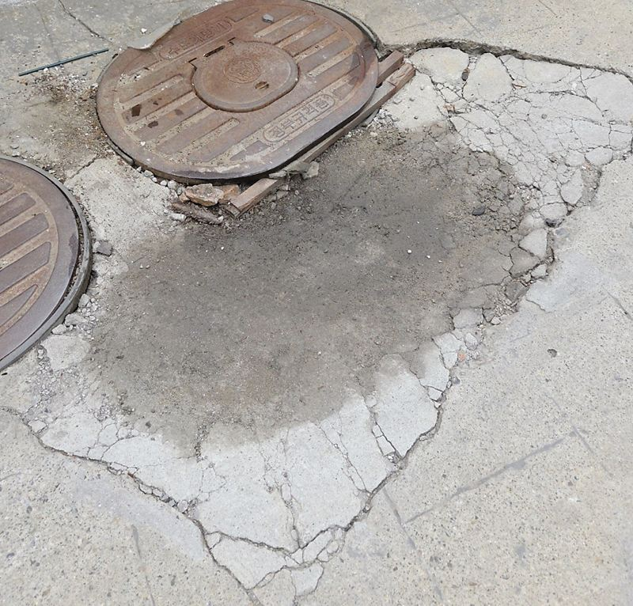
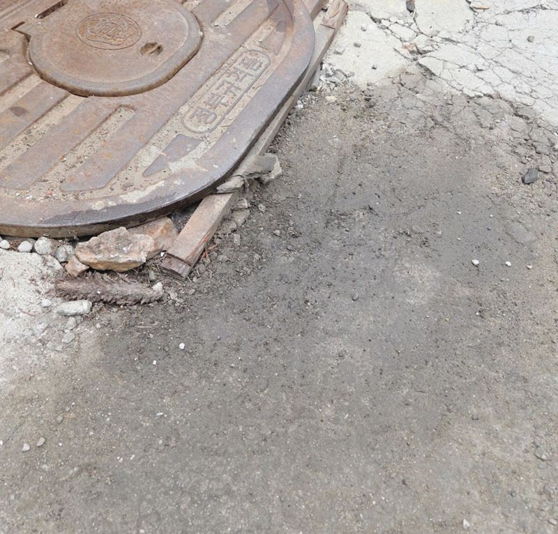
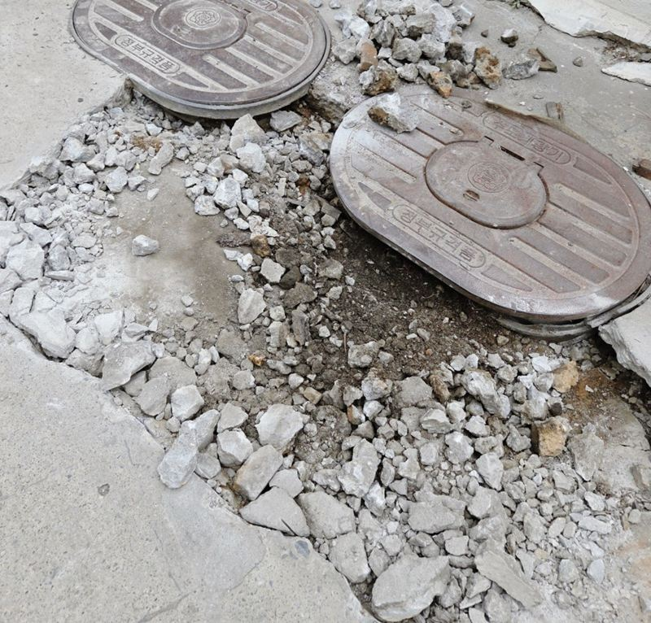
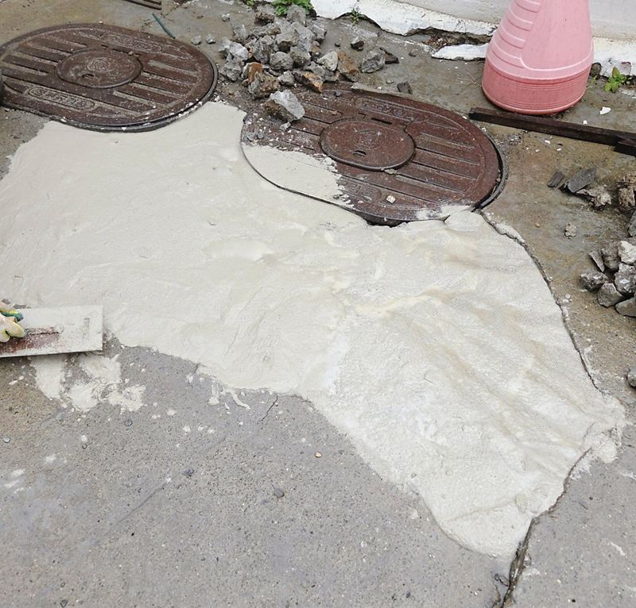
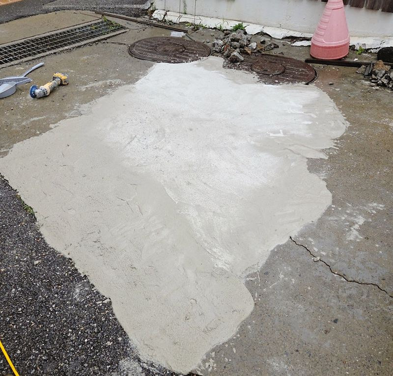
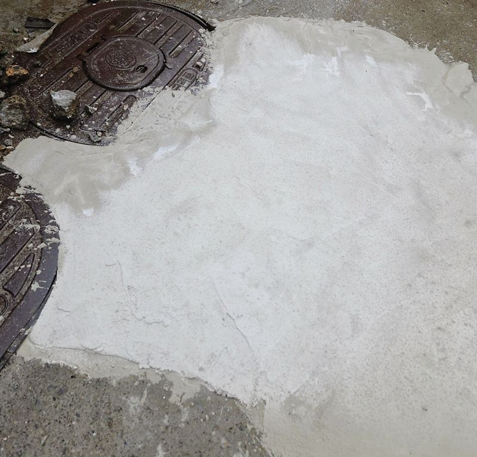
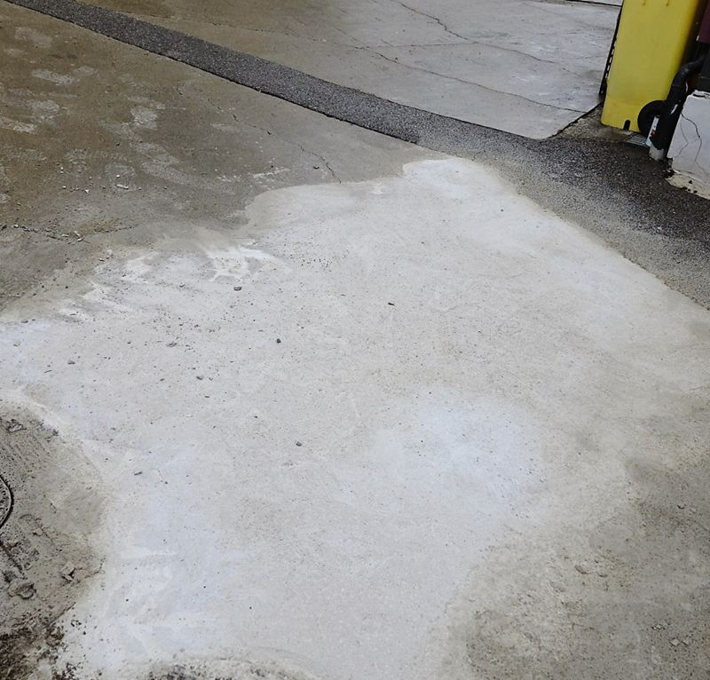

김포 주차장 맨홀 주변 땅꺼짐 몰탈 보수 방법

 보수 전보수 후
보수 전보수 후← 밀어서 전후 비교 →
"몇 년 전 하수도 점검 때 손본 적이 있는데, 이번엔 맨홀 둘레가 또 내려앉았어요. 다 뜯는 공사 말고 필요한 데만 고칠 수 있을까요?" 김포 양촌읍 집 앞 주차장이었어요. 맨홀 주변이 접시처럼 꺼지고 갈라져, 차가 지날 때마다 더 벌어질까 걱정하셨어요. 꺼진 범위만 잘라 열어 안쪽을 확인하고, 잡석으로 하부를 받친 뒤 몰탈로 주변 높이에 맞췄어요.
| 현장 | 김포 양촌읍 주택 앞 주차장, 맨홀 둘레 |
|---|---|
| 증상 | 맨홀 주변 바닥 내려앉음, 갈라짐 |
| 한 일 | 범위·균열 확인 → 꺼진 부분만 컷팅 → 안쪽 흙 유실 확인 → 잡석 채움·다짐 → 몰탈 충전 → 높이·평탄 마감 |
| 마감 | 요청에 따라 몰탈로 마무리 |
전체를 뜯지 않아도 되는 경우
맨홀 둘레 꺼짐은 배수 문제, 흙 유실, 차 무게가 겹쳐 생겨요. 가장 확실한 건 배관 전체를 확인하는 거지만, 그만큼 비용이 커져요. 이 집은 예전에 점검을 받은 적이 있어서, 이번엔 약해진 구간만 열어 보고 안쪽에 큰 이상이 없으면 하부를 다져 메우기로 상의했어요.


맨홀 주변 땅꺼짐 보수 순서
꺼진 부위만 컷팅
내려앉은 범위를 기준으로 필요한 만큼만 잘라 냈어요. 겉은 작은 금 같아도 아래 흙이 쓸려 나갔다면 위에 바로 몰탈을 올려도 다시 꺼져요.
안쪽 확인
잘라 낸 자리 아래가 비어 있는지, 흙이 얼마나 빠졌는지 살폈어요. 차 바퀴가 지나는 자리라 하부가 약하면 같은 일이 반복돼요.
잡석 채움과 다짐
빈 공간을 잡석으로 채우고 꾹꾹 다져 약해진 하부를 다시 받쳤어요. 끝나고 나면 안 보이지만 가장 중요한 단계예요.


몰탈로 높이 맞추기
주변 바닥 높이에 맞춰 몰탈을 채우고, 너무 솟거나 낮지 않게 이어지는 선을 보며 평평하게 다듬었어요.


현장과 요청에 따라 아스콘으로 덮을 수도 있지만, 이번엔 몰탈로 필요한 범위를 정리했어요. 고객분은 "크게 뜯어야 하나 걱정했는데 꺼진 데만 보수해 줘서 부담이 줄었고, 주차하기 훨씬 편해졌다"고 하셨어요.
보수 후 지켜볼 것
- 같은 자리가 다시 꺼지는지몇 달 뒤 또 내려앉으면 배관 쪽 원인을 의심해요.
- 비 온 뒤 물 고임물이 고이면 그 아래로 흙이 계속 빠질 수 있어요.
- 맨홀 둘레 틈테두리 틈이 다시 벌어지면 일찍 손보는 게 좋아요.
같은 집 다른 자리, 방법이 달랐던 이유
바닥 꺼짐은 자리마다 원인과 깊이가 달라 보수 방법도 달라져요. 구멍이 깊고 넓으면 철근과 아스콘까지 쓰고, 이번처럼 맨홀 둘레가 접시처럼 내려앉은 정도라면 잡석으로 받치고 몰탈로 맞추는 걸로 충분할 때가 많아요.
어느 쪽이든 공통으로 중요한 건 아래를 먼저 받치는 거예요. 위만 덮으면 몇 달 안에 같은 자리가 다시 꺼져요. 보수 범위는 잘라 열어 본 뒤 안쪽 상태를 보고 최종으로 정해요.
맨홀 주변 땅꺼짐 질문
맨홀 뚜껑도 바꿔야 하나요?
뚜껑이 깨지거나 덜컹거리면 함께 바꿔요. 멀쩡하면 높이만 맞춰요.
몰탈과 아스콘은 뭐가 달라요?
몰탈은 단단하고 작은 범위에 좋고, 아스콘은 주변이 아스팔트일 때 색과 질감이 맞아요.
보수 후 언제부터 차를 대도 되나요?
바퀴가 바로 올라가면 표면이 눌려요. 언제부터 대도 되는지 마무리 때 말씀드려요.
배관 점검도 같이 해야 하나요?
같은 곳이 반복해서 꺼진다면 배관 확인을 권해요.
공용 하수도 맨홀이에요.
공공 시설은 관할 기관에 먼저 알려야 할 수 있어요. 집 앞 사유지 안인지 확인해 주세요.
비용은 어떻게 정해지나요?
꺼진 넓이와 깊이, 잡석·몰탈 양, 마감 재료에 따라 달라요.
다른 바닥 보수 현장
꺼진 맨홀 둘레를 가까이, 주차장 전체를 멀리서 찍어 보내 주세요.
전화 상담 010-4517-9872